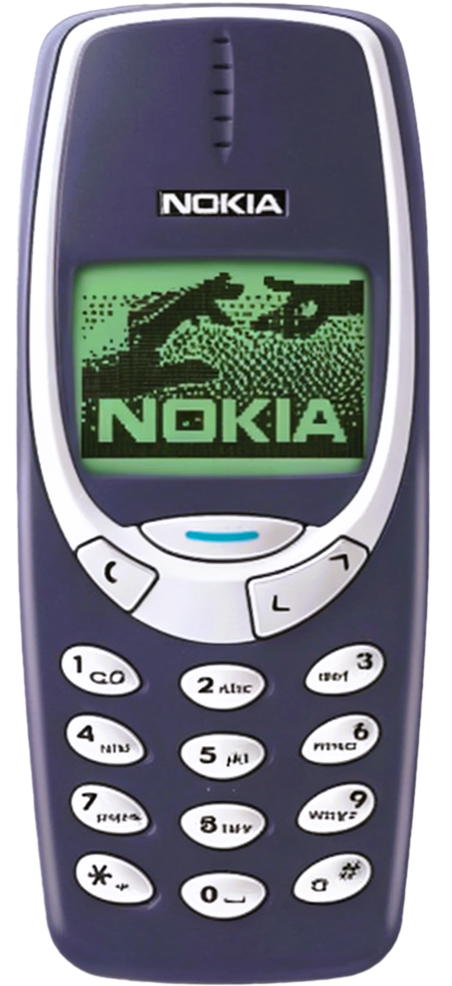

Who could have imagined that, just twenty years later or so, we
would be scrolling through colorful smartphones, surfing the
internet whenever and wherever we want? The technology that once
felt so futuristic has become a seamless part of our everyday
lives.
But I still look back fondly on that little Nokia, remembering the
mix of excitement and nervousness that came with it—my first step
into a connected world that was just beginning to unfold.
My Nokia 3310

I still remember the day my parents handed me my first cellphone—a Nokia 3310. As a schoolgirl, I was thrilled yet a little shy about it. Back then, mobile phones were a rarity, and having one felt both exciting and slightly embarrassing. I would quietly slip it into my backpack, unsure of how my classmates would react if they knew I had a phone.
The Nokia 3310 was a sturdy little device, with its monochrome screen and iconic ringtone that echoed through the school hallways. I spent hours playing Snake and carefully composing text messages, each one a novelty in a world where instant communication was still a new concept. It was a time when a phone wasn’t just a tool—it was a symbol of something new and different.
Psst!
Hey!